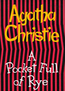
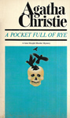
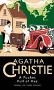
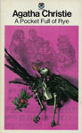
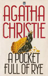
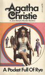
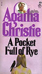
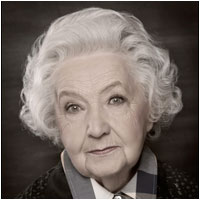

Like several of Christie's novels (e.g. Hickory Dickory Dock and One, Two, Buckle My Shoe) the title and substantial parts of the plot reference a nursery rhyme, in this case "Sing a Song of Sixpence". Miss Marple travels to the Fortescue home to offer information on the maid, Gladys Martin. She works with Inspector Neele until the mysteries are revealed.
Two reviewers at the time of publication felt that "the hidden mechanism of the plot is ingenious at the expense of probability" and that the novel was "Not quite so stunning as some of Mrs Christie's criminal assaults upon her readers". Christie's overall high quality in writing detective novels led one to say "they ought to make her a Dame". Writing later, another reviewer felt that the characters included an "exceptionally nasty family of suspects" in what was "still, a good, sour read."







Screen Versions
In 1983 the novel was adapted into the Russian-language film Tayna chyornykh drozdov (The Secret of the Blackbirds) and starred Estonian actress Ita Ever as Miss Marple.
A Pocket Full of Rye was the fourth transmitted story in the BBC series of Miss Marple adaptations, which starred Joan Hickson as the elderly sleuth. It was first broadcast in two parts on 7 & 8 March 1985. Despite remaining faithful to the novel, apart from giving the title as "A Pocketful of Rye" (sic), the characters of Mrs. MacKenzie, Gerald Wright and Elaine Fortescue did not make an appearance. In the end the murderer dies in a car crash, while there is no such thing in the novel.
The novel was adapted for the fourth series of the British television series Agatha Christie's Marple broadcast on ITV on 6 September 2009, starring Julia McKenzie as the title character.



Elza Radzina
Fabia Drake
Thea Collings